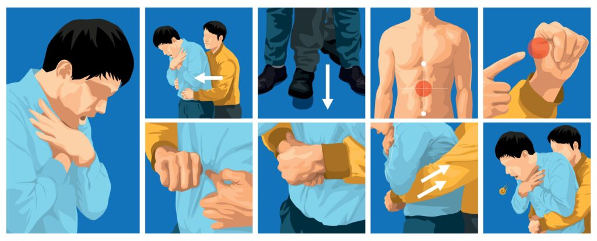
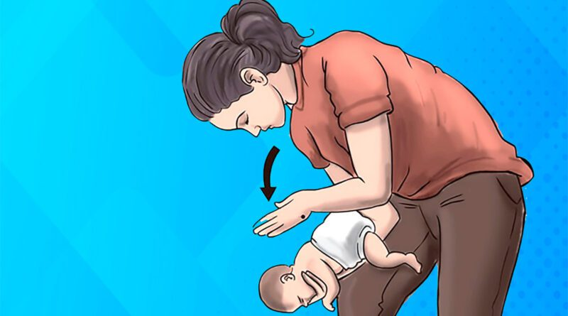
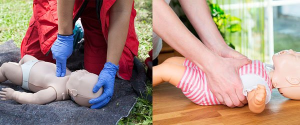

O que é o engasgo?
O engasgo acontece quando um corpo estranho obstrui a traqueia ou a laringe, impedindo a passagem de ar para os pulmões.
- Obstrução parcial: A vítima consegue tossir, emitir sons ou respirar.
- Obstrução total: A vítima não consegue falar, tossir ou respirar.
Sinais clássicos:
- Mão no pescoço (sinal universal de engasgo).
- Dificuldade respiratória ou ausência de respiração.
- Incapacidade de falar ou tossir.
- Cianose, ansiedade ou perda de consciência.
Como proceder no APH
1. Avaliação inicial
- Identifique o engasgo com perguntas diretas.
- Determine a gravidade: parcial ou total.
2. Manobras para desobstrução
Adultos e crianças > 1 ano (Manobra de Heimlich)
- Fique atrás da vítima.
- Coloque uma mão em punho sobre o abdômen, acima do umbigo.
- Com a outra mão, pressione o punho para cima e para dentro.
- Repita até a desobstrução ou perda de consciência.

Bebês < 1 ano
- 5 tapotagens nas costas com o bebê de bruços.
- 5 compressões torácicas com o bebê de barriga para cima.
- Repita até liberar a via aérea ou o bebê ficar inconsciente.

Se perder a consciência
- Deite a vítima no chão e inicie RCP.
- Verifique a boca antes das ventilações.
- Continue até desobstrução ou chegada do suporte avançado.


3. Cuidados adicionais
- Não realizar "varredura cega" (prática de inserir os dedos na boca ou garganta da vítima para tentar remover um corpo estranho sem visualizá-lo claramente) na boca.
- Após desobstrução, encaminhar ao hospital.
- Documentar todo o procedimento.
Resumo:
- Identifique o engasgo.
- Obstrução parcial: incentive a tosse.
- Obstrução total: Heimlich ou tapotagem/compressão (bebês).
- Inconsciência: iniciar RCP.
- Transporte e monitoramento.